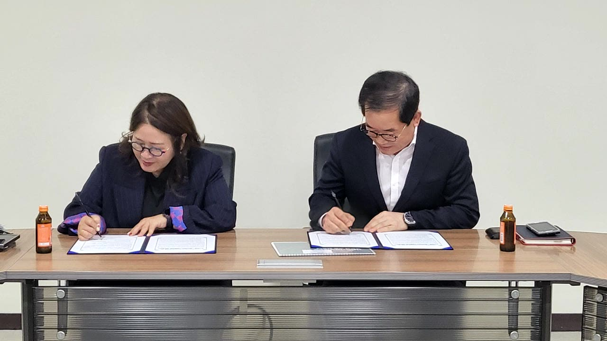

LET’S TALK
혼자 고민하지 마세요.
가까이에서 듣겠습니다.
나에게 맞는 지원이 있는지,
전화 한 통으로 먼저 이야기 나눠보세요.
미소금융 부산중구법인
부산 중구에서
만나 뵙겠습니다.
부산광역시 중구 중앙대로 21서민금융통합지원센터 (우) 48955
- 상담시간
- 평일 09:00–18:00
- 점심시간
- 12:00–13:00
- 팩스
- 051-255-0076
주말·공휴일 휴무 · 방문 전 전화 문의 권장
네이버 지도로 길찾기